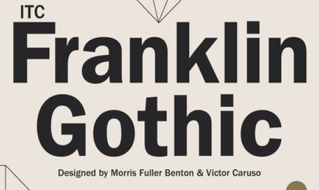
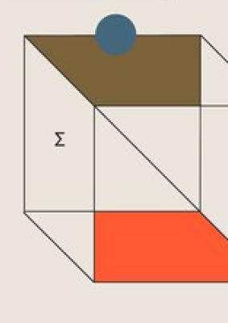
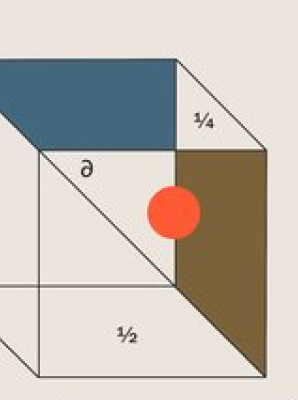
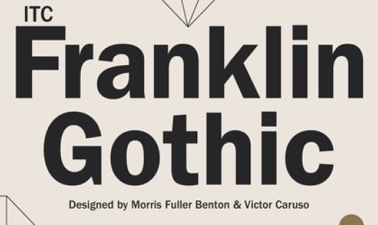
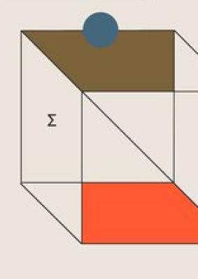
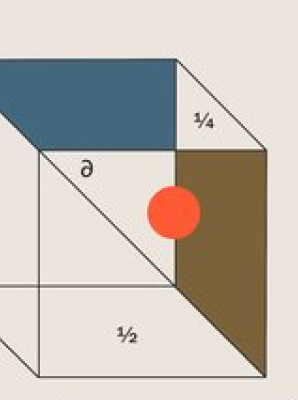
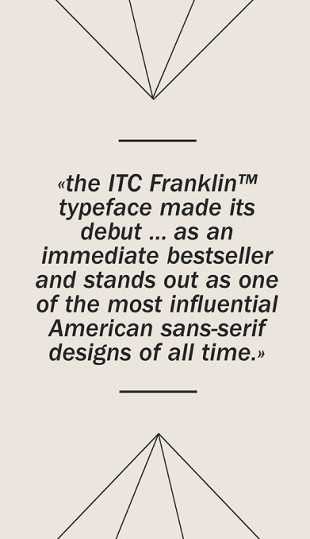

FRANKLIN GOTHIC
 





URW TYPE FOUNDRY
STORIA
La URW è stata fondata nel 1971 da Gerhard Rubow e Jürgen Weber come
società di consulenza aziendale, Rubow Weber GmbH.
Ben presto Peter Karow si unì come terzo partner e in seguito la società fu ribattezzata URW Software & Type GmbH (abbreviazione: URW, che sta per Unternehmensberatung Rubow Weber ).
Negli anni successivi furono sviluppati prodotti nel settore della grafica: programmi di composizione e layout per editori per l'utilizzo di Digiset e software per il sistema di elaborazione delle immagini Chromacom sviluppato da Hell Verein Kiel.
Nel 1983 URW ha sviluppato un sistema per ritagliare diverse scritte e figure su pellicole autoadesive colorate per la pubblicità esterna.
Nel 1975 fu introdotto Ikarus, un programma in grado di memorizzare digitalmente i contorni di una lettera insieme a tutte le informazioni necessarie per la composizione elettronica, diventando uno standard nel settore della tipografia.
Per la revisione e la manipolazione di singole lettere o interi gruppi di caratteri, URW ha sviluppato un editor grafico e una moltitudine di programmi per rendere disponibili digitalmente i caratteri per diversi sistemi di composizione.
Ben presto Peter Karow si unì come terzo partner e in seguito la società fu ribattezzata URW Software & Type GmbH (abbreviazione: URW, che sta per Unternehmensberatung Rubow Weber ).
Negli anni successivi furono sviluppati prodotti nel settore della grafica: programmi di composizione e layout per editori per l'utilizzo di Digiset e software per il sistema di elaborazione delle immagini Chromacom sviluppato da Hell Verein Kiel.
Nel 1983 URW ha sviluppato un sistema per ritagliare diverse scritte e figure su pellicole autoadesive colorate per la pubblicità esterna.
Nel 1975 fu introdotto Ikarus, un programma in grado di memorizzare digitalmente i contorni di una lettera insieme a tutte le informazioni necessarie per la composizione elettronica, diventando uno standard nel settore della tipografia.
Per la revisione e la manipolazione di singole lettere o interi gruppi di caratteri, URW ha sviluppato un editor grafico e una moltitudine di programmi per rendere disponibili digitalmente i caratteri per diversi sistemi di composizione.
URW++
Dopo che la URW dichiarò bancarotta all'inizio del 1995, Peter
Rosenfeld fondò la URW++ il 1° marzo di quell'anno.
Il 1° gennaio 1996 ha trasferito la ditta individuale, insieme al Dr. Jürgen Willrodt, Jochen Lau e Svend Bang, in una Gesellschaft mit beschränkter Haftung .
URW++ è stata venduta a Global Graphics plc nel 2016 e ribattezzata URW Type Foundry GmbH nel 2018.
Fino al 2019, Peter Rosenfeld è stato l'amministratore unico di URW Type Foundry e dal 2020 Christofer Linusson è l'amministratore unico.
URW Type Foundry è stata venduta a Monotype Imaging nel maggio 2020.
Al momento della vendita, URW deteneva i diritti su migliaia di caratteri originali, inclusi sempre più caratteri non latini.
Di particolare importanza sono stati i rapporti consolidati con aziende cinesi e giapponesi, per le quali URW ha sviluppato uno speciale software per la modifica dei caratteri cinesi.
URW è stata coinvolta nello sviluppo di caratteri tipografici aziendali per Daimler, Siemens, Deutsche Telekom, General Motors e Activision Blizzard .
Il 1° gennaio 1996 ha trasferito la ditta individuale, insieme al Dr. Jürgen Willrodt, Jochen Lau e Svend Bang, in una Gesellschaft mit beschränkter Haftung .
URW++ è stata venduta a Global Graphics plc nel 2016 e ribattezzata URW Type Foundry GmbH nel 2018.
Fino al 2019, Peter Rosenfeld è stato l'amministratore unico di URW Type Foundry e dal 2020 Christofer Linusson è l'amministratore unico.
URW Type Foundry è stata venduta a Monotype Imaging nel maggio 2020.
Al momento della vendita, URW deteneva i diritti su migliaia di caratteri originali, inclusi sempre più caratteri non latini.
Di particolare importanza sono stati i rapporti consolidati con aziende cinesi e giapponesi, per le quali URW ha sviluppato uno speciale software per la modifica dei caratteri cinesi.
URW è stata coinvolta nello sviluppo di caratteri tipografici aziendali per Daimler, Siemens, Deutsche Telekom, General Motors e Activision Blizzard .
Formazione della libreria di caratteri

TYPE FOUNDRY
TYPE FOUNDRY